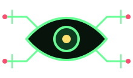

*** Independent human web outpost // Est. before the machine learned to autocomplete ***
THE MACHINE IS NOT THE MESSAGE
I distrust the algorithm, fear the black box, and miss when websites were just weird little places made by people. This very anti-AI rant was built with machine assistance. The hypocrisy is a feature; the panic is artisanal.
01001000 01010101 01001101 01000001 01001110

THE MACHINE IS WATCHING (SATIRICALLY)
This site does not profile you, predict you, or turn your clicks into a personality quiz. The eye is decorative. The paranoia is artisanal.
Choose a non-automated diversion
HUMAN ACTIVITIES // SELECT ONE
NO TRACKING COOKIES ✦ NO SMART FRIDGE ✦ NO ROBOT MAYOR
九
Patience & pattern
Sudoku // Human Logic
Fill every row, column, and little square with the numbers one to nine. Each new puzzle is freshly forged.
♠
Four players · two teams
Four Winds Whist
Choose your cards carefully. Three distinct-minded AI players are waiting around the felt table.
☼
A tale of dubious truth
Meet the host
Read the completely fictional, magnificently overinflated tale of the keeper of this hall.
Patience & pattern
Sudoku // Human Logic
Place each number from 1 to 9 once in every row, column, and 3 × 3 square. Select an empty cell, then type a number or tap a number below.
Keyboard: 1–9 to enter, arrows to move, Backspace to erase.
Four players · two teams
Four Winds Whist
You are South. North is your partner; East and West are the opposing team.
North / South0 points0 tricks this hand
Trump—Trick 1 of 13
East / West0 points0 tricks this hand
Games won — NS: 0 · EW: 0
Settings
NNorth · Tactical
WWest · Patient
EEast · Bold
SYou · South
The Unreasonable Times // Late edition
EXTRA! EXTRA! THE MACHINE DID WHAT?
FICTIONAL SATIRE // TOTALLY UNVERIFIED
Loading the imaginary wire…
01 / 08
Every headline here is made up for comedy. These are not real events, reports, or claims about actual systems.